2024 Sep 13
We are trying to do 3D reconstruction for a similar setup as V-PRISM [1], but to enforce some sort of prior to ensure accurate reconstructions of the backside of objects. In order to do this, we want to leverage the hinge point representation from the Hilbert Map literature. The image below shows that hinge points are expressive enough for our needs:
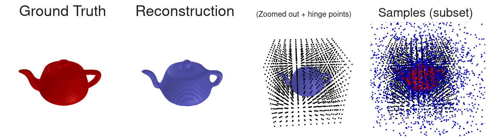
We also need to come up with a method to do the reconstruction. Last time, we were exploring using the weights corresponding to hinge points to query a precomputed dataset of weights. Some of the things that were suggested to try this week were:
I think I was able to do all of these. I didn’t have time to dig into doing reconstructions, so the majority of this write-up is focused on querying the dataset effectively and HM to sampled point cloud registration. There is also a section near the end on what we need to figure out next.
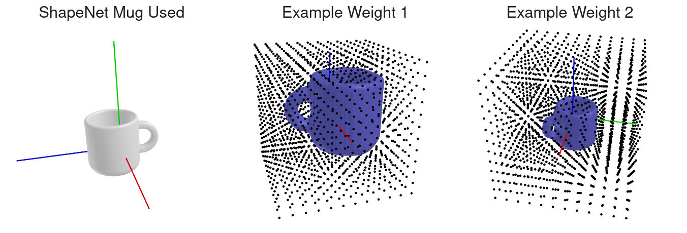
I generate a dataset of 5k mug weights, the same mesh, but with random rotations, offset, and scale. Rotations were only around the z-axis.
Here are two queries on novel views of that mesh. In the first one, the handle is occluded, in the second, the handle is visible:
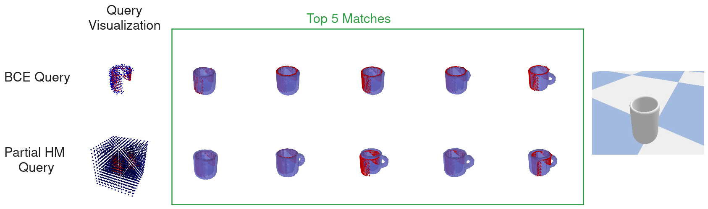
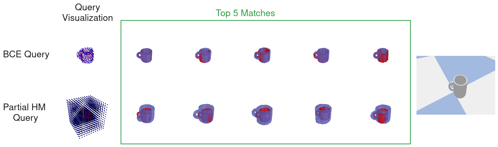
For the partial HM query, a Hilbert Map is trained from zeros and then the dot product is used to score with weights in the dataset. While the partial HM query struggled with scale, the BCE query would sometimes place the handle where we know it isn’t. When the handle was visible, the BCE query did a much better job. Obviously, if we do registration, things would snap to the point cloud. I think we should try out the different queries on a larger dataset to see how well they actually do.
I tried to do the same partial HM query on the YCB dataset from last time:
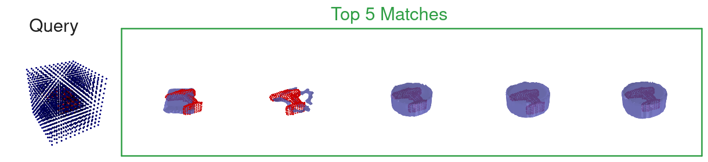
This didn’t exactly work as I’d like, so I guess it is back to the drawing board.
Note: In the YCB example, I normalized the weights (cosine similarity) instead of unnormalized.
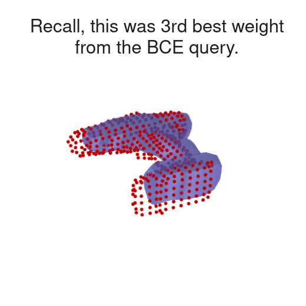
Above, I tried the following:
Last meeting we also discussed:
We could also do:
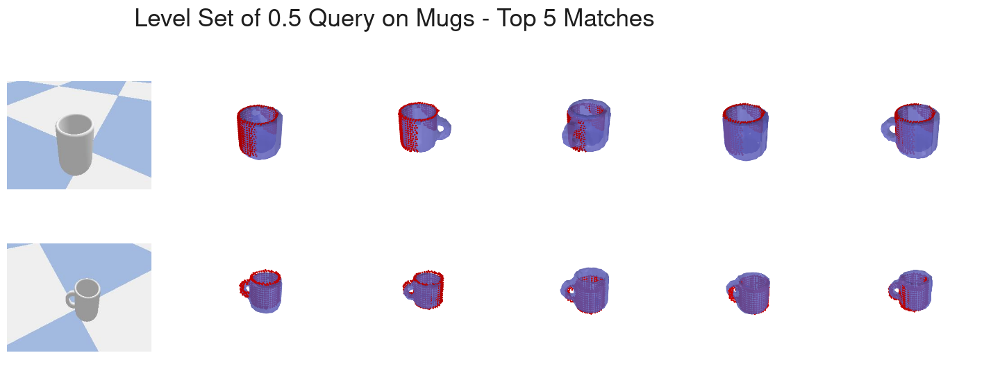
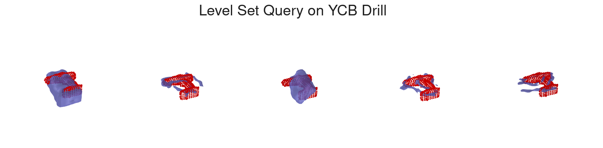
It seems like the level set query is not as good as BCE.
If we assume we already have a nearby object from the dataset, we might want to align the observation pose to the found weight. While there exists a lot of literature about how to perform such registration, I believe this might not exactly be what we want (See [2] for a survey; we talked about [3] last time and [4] is a more learning-based survey). Our specific problem is different for a couple of reasons:
As such, my idea is to simply parameterize an SE(3) pose and backprop from the BCE loss of our negative sampled points to the pose. We could either parameterize the hinge points with the transform, or alternatively, the data, then whenever we feed a new data point into the hinge points, we use the same transform beforehand. Here is graph of what that would look like:
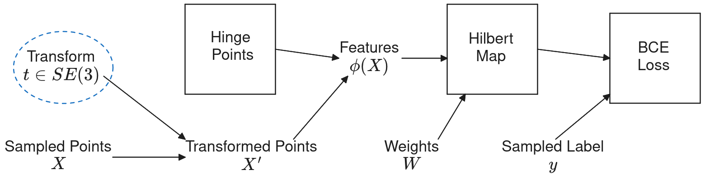
The blue dashed line signifies the parameter being optimized. In the case above, the transform is put on the sample points instead of the hinge points.
For this example, I perform registration on YCB dataset and observation. Here is a graphic of this approach:
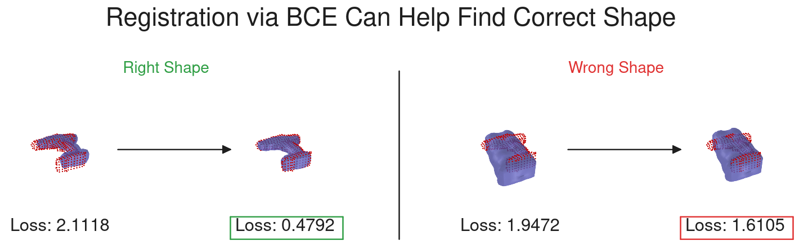
Notes:
Idea: This hints at a possible query that happens in multiple steps:
I decided to throw the whole multi-step query idea above together and try it out. For efficiency reasons, I grabbed 200 best matches on first query, run the pose opt, then grab the top 5 visualized below:
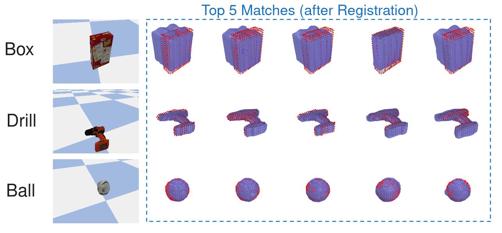
The drill was queried basically perfectly. The cheeze-it box matched with these big block looking things, so perhaps there could be a discussion on what to do about that or if it is okay. I do think scale could potentially be useful to optimize for during registration, but we got pretty good results here.
We want a reconstruction method that can do 3 things:
If the query above is working efficiently and effectively, we can use it to design a framework for creating reconstructions. Ideally, we want something that both works and can be justified to potential reviewers. I mentioned in previous weekly meetings that we could do something like approximate the prior distribution by the nearest samples from the dataset (retrieved by querying). I’m not sure exactly how to justify this theoretically, but maybe we could come up with a way of putting things together that we fit into a story about the theory? I have created a figure below about the rough outline of what a potential method could be.
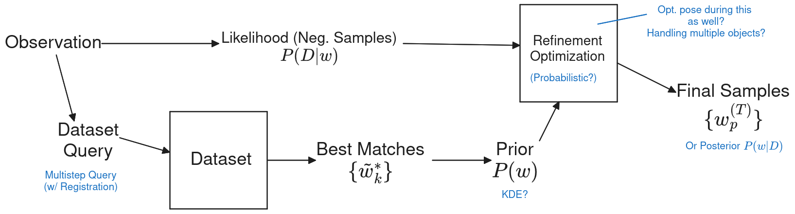
Some other pieces that are key that we need to figure out:
I want to take a crack at the reconstruction; obviously simply gradient descent would be a minimal version, but I also want to get a clearer picture on what feels like the best way to set things up. I also want to try to reconstruct objects both inside and outside of the dataset, as well as brainstorm the simplest way to get plausible diversity.